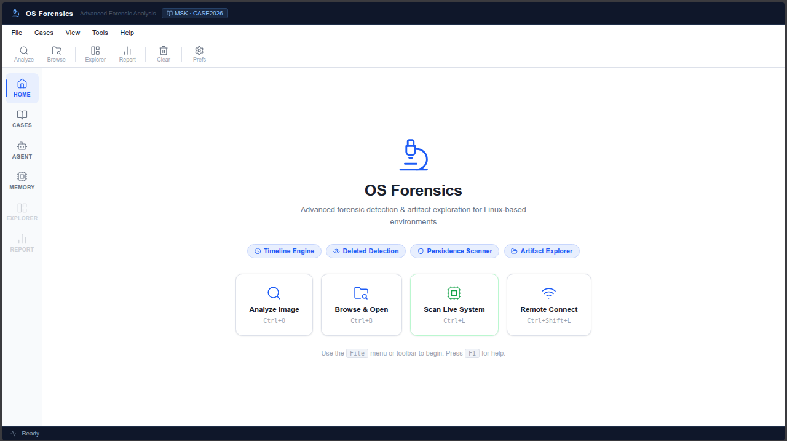
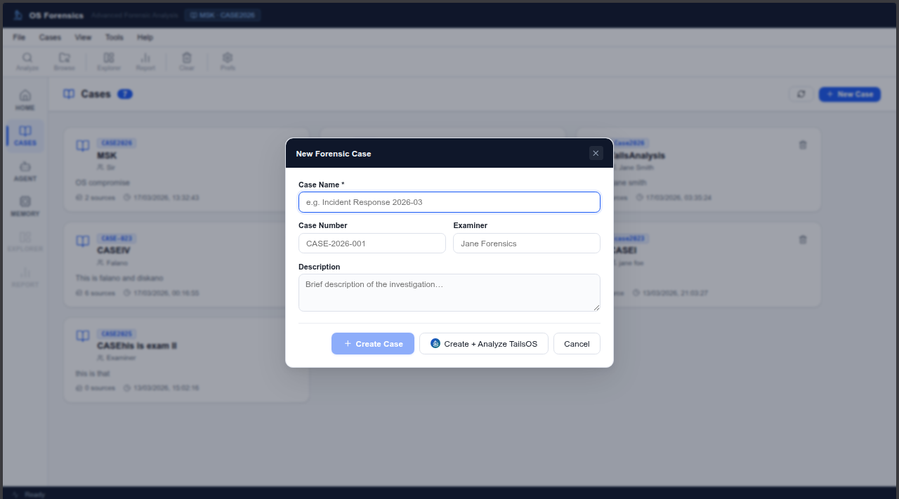
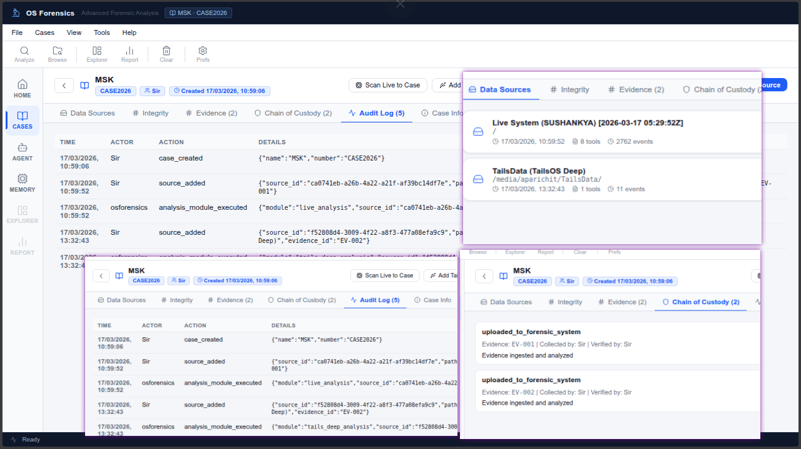
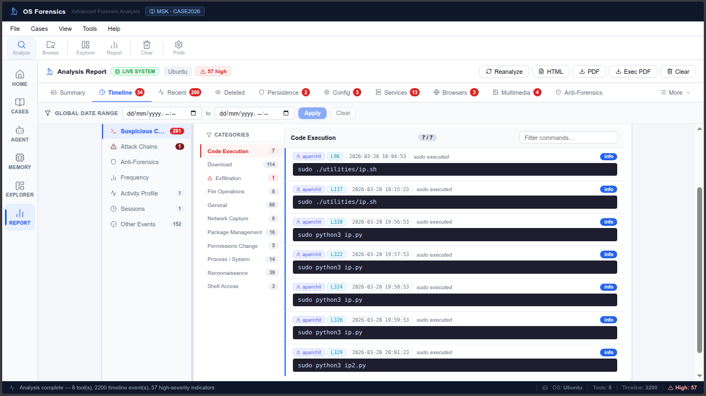
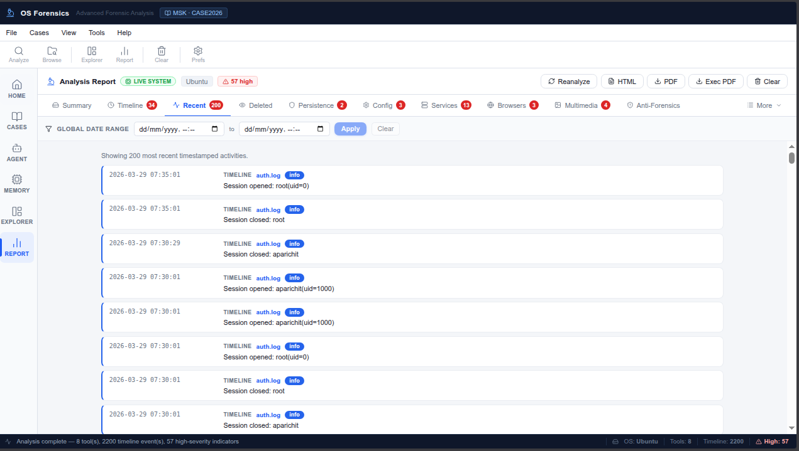
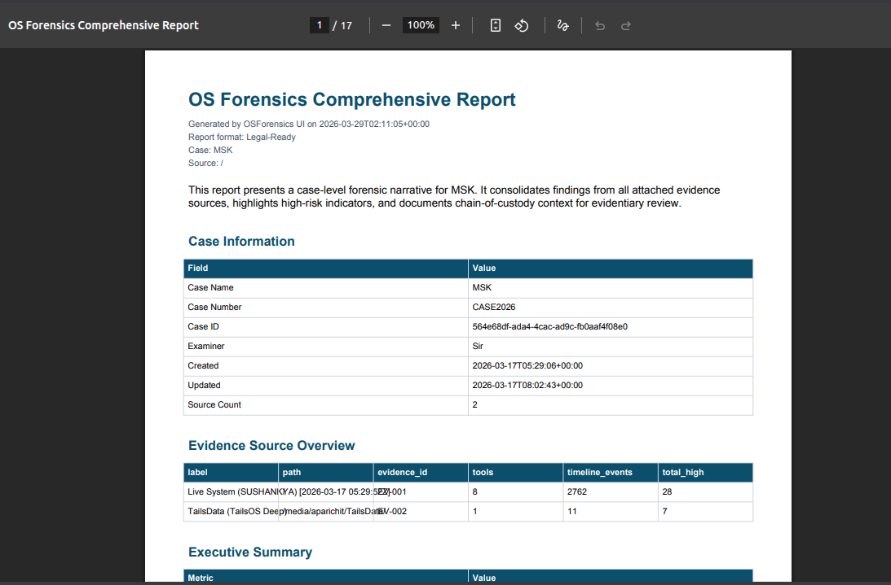
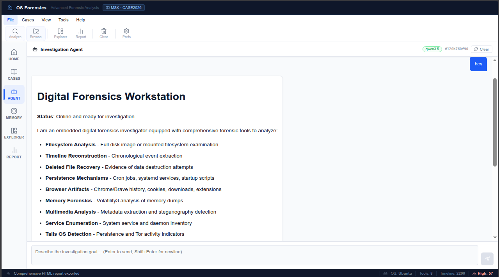

OSForensics
An Electron-Packed Desktop Application Built with Web Technologies for Linux Forensic Analysis
Team Members
| Name | Registration Number |
|---|---|
| Shudarsan Regmi | CH.SC.U4CYS23055 |
| Hirthij Balaji C | CH.SC.U4ARE23056 |
| K S Maangalya | CH.SC.U4CYS23013 |
Certificate and Declaration
This is to certify that the project report titled OSForensics has been prepared and submitted as part of the hackathon initiative CyberSheild 2026. The work presented here is an original implementation effort by the team listed in this report, completed for educational and research-oriented cybersecurity innovation.
We declare that:
- The implementation was developed by the team during the project timeline and demonstrates our technical understanding of digital forensics principles.
- All analysis flows in this project are intentionally read-only and non-destructive toward evidence sources.
- The report content, system designs, and interpretation presented here are based on our own development and testing outcomes.
- Any open-source tools, libraries, and frameworks used are acknowledged in the references section.
CH.SC.U4CYS23055
CH.SC.U4ARE23056
CH.SC.U4CYS23013
Abstract
OSForensics is a forensic prototype developed for the CyberSheild 2026 challenge on Analysis of Privacy-Focused and Adversary-Favored Operating Systems. The solution targets Linux environments commonly leveraged for offensive security and anonymity workflows, including distributions such as Kali Linux, BlackArch, and Tails OS.
The solution is delivered as a desktop application packaged with Electron and developed using web technologies. This approach provides a classical desktop-app experience for investigators while retaining a fast and maintainable modern UI development stack.
The platform performs operating-system-aware inspection on either a live Linux filesystem context or a disk image/filesystem snapshot. It identifies Linux distribution characteristics, detects potentially misused tool artefacts, classifies findings into risk-oriented categories, and generates structured reports with supporting indicators.
The backend is intentionally forensic-aware and non-destructive, with read-only evidence handling, integrity metadata, provenance, and audit context. Analysis modules focus on package and filesystem traces, configuration artefacts, metadata, persistence indicators, and related system evidence that remain meaningful even in privacy-centric or partially amnesic environments.
The final output is actionable for investigators: identified OS profile, detected tools and traces, risk classification, and investigation observations in JSON/HTML/PDF formats. This report documents how the implementation maps directly to the challenge functional expectations and design constraints.
Table of Contents
- 1. Introduction and Motivation5
- 2. Problem Statement and Objectives6
- 3. Scope, Assumptions, and Constraints7
- 4. Literature and Technology Background8
- 5. System Architecture Overview9
- 6. Backend Design (FastAPI Core)10
- 7. Filesystem and Evidence Access Layer11
- 8. Forensic Analysis Modules12
- 9. Remote SSH Live Acquisition Pipeline13
- 10. AI Investigation Agent Design14
- 11. Legal Awareness and Procedural Metadata15
- 12. Reporting and Export Framework16
- 13. Frontend and User Workflow17
- 14. Security, Privacy, and Safety Controls18
- 15. Testing Strategy and Validation19
- 16. Results and Observations20
- 17. Challenges and Engineering Trade-offs21
- 18. Innovation Highlights for CyberSheild 202622
- 19. Future Work and Productization Roadmap23
- 20. Conclusion24
- Appendix A - API Endpoints25
- Appendix B - Desktop Application Screenshots26
- Appendix C - Risk Register27
- Appendix D - References28
Page numbers are aligned for print layout and may vary slightly depending on printer/PDF settings.
Introduction and Motivation
Modern cybercrime investigations are no longer limited to conventional Windows and macOS artefacts. Threat actors and privacy-conscious users increasingly operate from Linux distributions engineered for anonymity, offensive testing, and minimal persistent traceability. This transition creates a practical gap for forensic teams that rely on Windows-centric triage models.
Distributions such as Kali Linux, BlackArch, and Tails OS provide ready access to reconnaissance, exploitation, anonymization, and covert transfer tooling. While these tools have legitimate educational and defensive uses, they can also be repurposed in malicious workflows. Investigators therefore require operating-system-aware inspection that can distinguish context, not only list files.
OSForensics was built to address this gap by combining Linux-aware evidence extraction, artefact detection, and structured risk categorization into one workflow. The project emphasizes interpretable forensic signals from package traces, configuration files, metadata, persistence clues, and service footprints while preserving evidence integrity.
This report positions the implementation as a direct response to the hackathon challenge and demonstrates how the prototype converts raw Linux artefacts into actionable investigation output.
Problem Statement and Objectives
Problem Statement
The core challenge is to design a forensic tool capable of analyzing Linux environments favored for offensive operations and privacy protection, including live-boot and amnesic contexts. Conventional investigation workflows often fail to provide clear visibility into these systems, especially when persistence is limited or intentionally minimized.
Primary Objectives
- Identify the underlying Linux distribution and recognize adversary-favored or privacy-focused profiles.
- Detect tool and artefact traces related to anonymization, reconnaissance, intrusion utilities, and covert transfer mechanisms.
- Classify findings into behavioral/risk groups such as high-risk offensive tooling, and privacy infrastructure.
- Operate on live Linux context or disk image/filesystem snapshot without destructive interactions.
- Generate a structured forensic report with OS characteristics, indicators, risk level, and investigation observations.
- Preserve evidentiary integrity through provenance, hashing, and audit-aware reporting practices.
Functional Mapping to Challenge
| Challenge Expectation | Prototype Response |
|---|---|
| Operating system identification | Linux distribution heuristics and Tails/live-environment indicators. |
| Tool and artefact detection | Config/package/filesystem traces for Tor, VPN/proxy, recon/intrusion, transfer utilities. |
| Behavior and risk classification | Categorized findings with offensive, dual-use, and privacy-oriented grouping. |
| Forensic reporting | Structured JSON/HTML/PDF output with evidence context and observations. |
Success Criteria
| Criterion | Expected Outcome |
|---|---|
| OS Awareness | Meaningful identification of Linux distribution and privacy/live indicators. |
| Tool Visibility | Detection of relevant anonymization/offensive/covert-transfer artefacts. |
| Evidence Safety | No write operations on source evidence paths during analysis. |
| Traceability | Reports include indicators, provenance context, and audit-aware metadata. |
Scope, Assumptions, and Constraints
Scope
The scope focuses on Linux-centric forensic triage for distributions and environments commonly associated with adversary operations or privacy-first usage. The prototype targets filesystem artefacts, package traces, metadata, configuration files, and selected process/system indicators that can be collected safely in constrained investigation windows.
Assumptions
- Investigators operate with lawful authority and proper authorization for evidence acquisition.
- Target systems include Linux distributions such as Kali-like, BlackArch-like, and Tails-like profiles.
- When remote mode is used, SSH access and bounded collection parameters are available.
Constraints
- Detection is heuristic in multiple areas and should be interpreted with analyst validation.
- The tool is intentionally non-destructive and avoids invasive or state-changing host actions.
- This stage prioritizes investigative visibility and challenge alignment over full enterprise automation.
These boundaries align with challenge guidance: non-destructive operation, evidentiary integrity, and focus on actionable traces from Linux-native artefacts.
Literature and Technology Background
Digital Forensics Foundations
Digital forensics requires acquisition, preservation, examination, analysis, and reporting. A valid workflow preserves original evidence and provides reproducible methods for deriving findings. File metadata, logs, process traces, and user artifacts are key evidence classes in host investigations.
Core Technologies Used
| Technology | Role in Project |
|---|---|
| Python 3.12+ | Primary implementation language for backend and analysis modules. |
| FastAPI | API framework for ingestion, analysis, and reporting endpoints. |
| pytsk3 / Sleuth Kit | Filesystem evidence access where image-level parsing is available. |
| React + Vite | Frontend workflow for analysts and report export operations. |
| Ollama | Local LLM serving for AI investigation agent reasoning. |
Design Rationale
The team selected technologies that are open, scriptable, and portable. The architecture favors explicit API contracts and modular analyzers so that new capabilities can be inserted without rewriting the full pipeline.
System Architecture Overview
OSForensics follows a layered architecture with clear separation of concerns: acquisition, extraction, analysis, orchestration, and presentation. This structure helps maintain extensibility and makes the codebase suitable for incremental growth after the hackathon.
Backend Core
FastAPI endpoints trigger standardized analysis flows. Modules are selected based on request toggles and environment capabilities.
Frontend Layer
React interface supports source submission, analysis execution, result browsing, and report export actions.
The architecture emphasizes deterministic processing, allowing AI assistance to sit above reliable forensic tool calls rather than replacing them.
Backend Design (FastAPI Core)
The backend is implemented as a service-oriented FastAPI application. It exposes endpoints for direct analysis, case-specific analysis, remote acquisition, and report export. Request models enforce explicit parameters to reduce ambiguous execution paths.
Representative Endpoints
POST /analyze: Analyze local image path or mounted filesystem source.POST /analyze/ssh: Perform bounded remote collection and analyze the snapshot.POST /cases/{case_id}/analyze/ssh: Run remote acquisition under case context.POST /report/export/html: Generate structured dossier in HTML.POST /report/export/pdf: Generate PDF report for legal and operational sharing.
Execution Model
Each run resolves source access, executes selected modules, aggregates findings, and appends legal metadata. The API is intentionally stateless per request while case data provides persistent history and evidentiary tracking.
Filesystem and Evidence Access Layer
Forensic analysis quality depends on how evidence is accessed. OSForensics introduces an abstraction that supports both filesystem mounts and image-based parsing with pytsk3 where available. This avoids module-specific coupling to source format.
Design Goals
- Read-only behavior by default.
- Uniform path traversal API for analyzers.
- Compatibility with local testing and image-driven workflows.
Operational Benefits
The abstraction allows investigators to test heuristics quickly in development and apply the same logic to real evidence images in controlled environments. This is particularly useful in hackathon delivery, where both speed and correctness are critical.
Forensic Analysis Modules
The module stack is designed to satisfy challenge expectations around OS-aware inspection, tool artefact detection, and risk classification across adversary-favored Linux environments.
| Module | Challenge Function | Representative Indicators |
|---|---|---|
| OS and Environment Detection | Identify Linux distribution and live/amnesic traits. | Release files, live boot artefacts, Tails persistence markers. |
| Anonymization and Privacy Detection | Detect privacy infrastructure traces. | Tor configuration, proxy/VPN traces, privacy-focused service configs. |
| Recon and Intrusion Tool Detection | Highlight offensive-security utility presence. | Package signatures, binaries, framework traces, config remnants. |
| Covert Transfer / Exfiltration Indicators | Surface tunneling and secure transfer artefacts. | SSH tunnel configs, transfer utility traces, suspicious sync patterns. |
| Persistence and Service Analysis | Find startup persistence and service abuse clues. | Systemd/init entries, autorun scripts, unusual daemon state. |
| Timeline and Deleted Artefacts | Reconstruct activity context and removed evidence clues. | Temporal event ordering, deleted file references and metadata. |
| Risk Classification Layer | Categorize findings by investigative risk profile. | High-risk offensive, dual-use cybersecurity, privacy/anonymization buckets. |
Modules are toggleable per case, allowing investigators to adapt depth and runtime while maintaining forensic-safe, read-only analysis behavior.
Remote SSH Live Acquisition Pipeline
OSForensics supports acquiring evidence snapshots from remote Linux systems over SSH. The pipeline is designed for bounded collection to prevent uncontrolled data transfer and to preserve analyst-defined limits.
Key Parameters
include_paths: controls evidence coverage.max_total_mb,max_file_mb,max_files: hard resource limits.- Module toggles: allows selective forensic processing after acquisition.
Workflow
- Authenticate to remote host using SSH key credentials.
- Collect bounded snapshot into local workspace staging area.
- Run standard analysis pipeline on staged snapshot.
- Attach provenance and audit details to the output report.
This feature is highly valuable in incident response where physical image acquisition may be delayed but immediate triage is required.
AI Investigation Agent Design
The AI investigation layer uses a ReAct-style design in which the model reasons over case context and invokes deterministic forensic tools. This architecture avoids uncontrolled hallucination by grounding high-level language interaction in concrete module outputs.
Agent Characteristics
- Tool-augmented reasoning with explicit action/observation loop.
- Local model integration using Ollama for privacy-conscious operation.
- Domain-specific tool registration for focused forensic tasks.
Advanced Agent Toolkit Highlights
- Multimedia metadata and steganography indicator extraction.
- Tails OS specialized persistence and amnesia checks.
- Configuration hardening and network integrity audits.
- Advanced file carving support for evidence recovery attempts.
The result is a collaborative workflow where AI assists speed and discoverability, while investigators retain judgment and evidentiary accountability.
Legal Awareness and Procedural Metadata
The project integrates legal and procedural metadata directly in analysis output to support forensic defensibility. This is a major differentiator from purely technical analyzers.
Implemented Legal Features
- Evidence Integrity: SHA256 and SHA1 hashes for file-based evidence, with acquisition timestamp.
- Chain of Custody: Case records maintain source-level evidence identifiers and transition events.
- Evidence Provenance: Source and extraction method are retained in analysis context.
- Audit Logging: Case/source actions and analysis activities are logged for traceability.
- Legal Disclaimer Block: Reports include cautionary guidance and corroboration reminders.
Embedding this metadata in every run encourages investigators to treat reporting as a legal artifact, not only a technical output.
Reporting and Export Framework
A project is only useful if its findings can be communicated effectively. OSForensics provides structured exports in JSON, HTML, and PDF with report variants tailored to different audiences.
Available Variants
- Comprehensive: full technical depth plus legal metadata.
- Legal: custody and audit centric formatting.
- Executive: concise risk and impact summary.
Case-Level Reporting
When case data is supplied, the exporter can aggregate findings from multiple sources, generating a single dossier with source rollups and merged interpretations.
Output Design Principles
- Structured sections to avoid evidence omission.
- Consistent terminology for analyst handoff.
- Printable layouts suitable for documentation workflows.
Frontend and User Workflow
The analyst interface is implemented with web technologies (React + Vite) and packaged as an Electron desktop application. This provides a classical desktop app flow while preserving the speed and flexibility of modern web UI engineering.
Typical Analyst Journey
- Input evidence source or remote SSH host configuration.
- Select analysis toggles and execute the run.
- Review findings by section (timeline, deleted, config, browser, etc.).
- Open report view and export JSON, HTML, PDF, or executive PDF.
Usability Considerations
- Classical desktop app behavior suitable for labs, demonstrations, and investigation workflows.
- Structured report view for technical analysts and non-technical stakeholders.
- Direct integration with case workflow for traceable investigations and evidence continuity.
Security, Privacy, and Safety Controls
OSForensics was designed with a safety-first mindset to avoid accidental contamination of evidence and to support responsible handling of sensitive data.
Security Controls
- Bounded SSH collection parameters.
- Request-driven module gating to reduce attack surface.
- Controlled report generation with explicit metadata inputs.
Privacy and Safety
- Local model operation through Ollama (no mandatory cloud dependency).
- Read-only evidence handling principle.
- Trace logs for accountability and review.
Future hardening should include role-based access control, secrets management improvements, and stronger sandboxing for optional analyzers.
Testing Strategy and Validation
Given hackathon constraints, testing prioritized functional confidence and integration validity. Validation focused on endpoint behavior, analyzer compatibility, and export correctness.
Validation Methods
- Manual API invocation against local and staged sample sources.
- Selective script-based checks (for example, tool verification scripts).
- Report output inspection across JSON, HTML, and PDF variants.
- Remote acquisition test runs with bounded data limits.
Quality Observations
The prototype demonstrates stable end-to-end operation. The main testing gap is broad automated coverage and synthetic evidence datasets for regression benchmarking.
Results and Observations
The prototype met the core hackathon objective by delivering operating-system-aware Linux forensic inspection with structured, investigator-oriented outputs. End-to-end runs demonstrated that the system can ingest evidence, identify environment cues, detect high-value artefacts, classify risk context, and produce formal reports.
| Challenge Dimension | Observed Outcome |
|---|---|
| OS Identification | Linux environment characteristics and Tails-related indicators were surfaced in analysis outputs. |
| Tool & Artefact Detection | Anonymization, offensive-tooling, and persistence-related traces were captured from filesystem/config evidence. |
| Behavior/Risk Classification | Findings were grouped into offensive, dual-use, and privacy-oriented investigative categories. |
| Forensic Reporting | Structured JSON/HTML/PDF reports contained indicators, observations, and evidence context. |
| Evidentiary Integrity | Read-only analysis principles and legal metadata attachment were maintained. |
Overall, the implementation provided meaningful visibility into Linux systems that are often difficult to triage with conventional, Windows-biased workflows.
Challenges and Engineering Trade-offs
Challenges Faced
- Balancing rapid development with forensic rigor and non-destructive guarantees.
- Maintaining consistency across multiple analysis modules and data shapes.
- Designing AI assistance that remains grounded in deterministic evidence tooling.
- Handling environment dependencies such as pytsk3, Volatility, and SSH tooling.
Trade-offs Made
- Heuristic-first module design over deep parser completeness in initial release.
- Modular breadth over specialized narrow-depth implementation.
- Manual/targeted validation over full CI-grade test matrix during hackathon period.
These trade-offs were intentional and prioritized demonstrable end-to-end capability while preserving an upgrade path for precision and scale improvements.
Innovation Highlights for CyberSheild 2026
Within the competition context, the project showcased several innovation points that differentiate it from a basic scanner:
- Challenge-specific focus on privacy-focused and adversary-favored Linux environments rather than generic host scanning.
- Unified support for live context and disk image/filesystem snapshot analysis.
- Artefact-driven categorization of anonymization, offensive, dual-use, and covert-transfer tooling.
- Integrated legal-awareness metadata that preserves evidentiary context in every report.
- AI-assisted investigation workflow that remains grounded in deterministic forensic module outputs.
These features indicate strong potential for transition from academic prototype to operational research platform.
Future Work and Productization Roadmap
Short-Term Enhancements
- Expand automated testing with fixture-based evidence corpora.
- Improve parser depth for browser, log, and package database artifacts.
- Add configurable severity scoring and cross-artifact correlation rules.
Medium-Term Goals
- Role-based access control and multi-user case collaboration.
- Stronger evidence management lifecycle and immutable storage integration.
- Workflow templates for incident categories (malware, insider threat, data theft).
Long-Term Vision
- Enterprise deployment model with distributed processing.
- Extended memory forensics integrations and cloud workload evidence support.
- Model governance and explainability dashboards for AI-assisted decisions.
Conclusion
OSForensics addresses the challenge of investigating Linux environments that are privacy-focused, offensive-tool-rich, or intentionally low-trace. The prototype demonstrates that OS-aware forensic inspection can be performed in a structured, non-destructive, and investigation-oriented manner.
The implemented pipeline supports live or snapshot-style evidence analysis, identifies distribution and environment characteristics, detects high-value tool artefacts, and organizes findings by risk context. This directly supports investigators in moving from raw system traces to actionable case observations.
By combining evidentiary integrity safeguards, modular analysis, and professional reporting, the project aligns strongly with CyberSheild 2026 goals and provides a practical base for future production-grade Linux forensics research.
API Endpoints Snapshot
| Endpoint | Method | Description |
|---|---|---|
| /analyze | POST | Analyze local filesystem path or image source. |
| /analyze/ssh | POST | Remote host bounded acquisition and analysis. |
| /cases/{case_id}/analyze/ssh | POST | Case-bound remote analysis flow. |
| /report/export/html | POST | Generate structured HTML report output. |
| /report/export/pdf | POST | Generate printable PDF report output. |
This appendix is intended as a quick index; consult source documentation for full request/response schemas.
Desktop Application Screenshots
All screenshots below are from report/report_images.







Risk Register (Prototype Stage)
| Risk | Impact | Mitigation Direction |
|---|---|---|
| Heuristic false positives | Medium | Add confidence scoring and cross-check evidence correlation. |
| Dependency variability across environments | High | Containerized reference environment and setup validation scripts. |
| Limited automated tests | High | Adopt staged CI and fixture-backed regression testing. |
| Credential handling for SSH | Medium | Integrate secrets vault and stronger credential lifecycle controls. |
Tracking these risks openly ensures that future versions improve reliability, security posture, and deployability.
References
- Carrier, Brian. File System Forensic Analysis. Addison-Wesley.
- NIST SP 800-86. Guide to Integrating Forensic Techniques into Incident Response.
- Sleuth Kit Documentation and pytsk3 Python bindings.
- FastAPI Official Documentation.
- Volatility Foundation Documentation.
- OWASP Logging and Monitoring Guidance.
- Project documentation: README.md, Implementation.md, and module source files under
src/osforensics.
End of Report